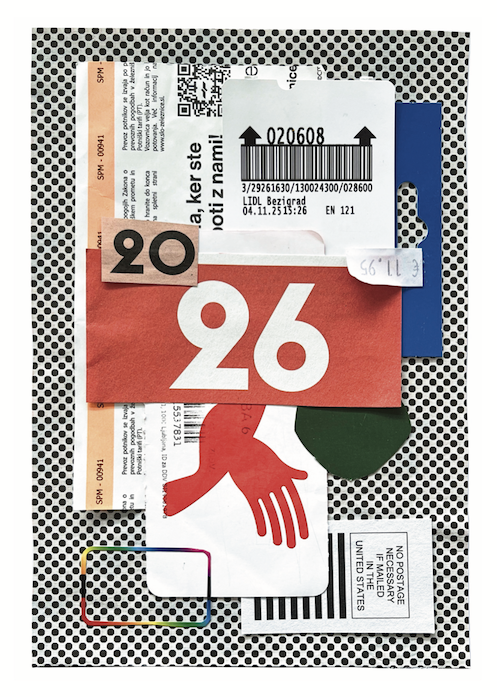
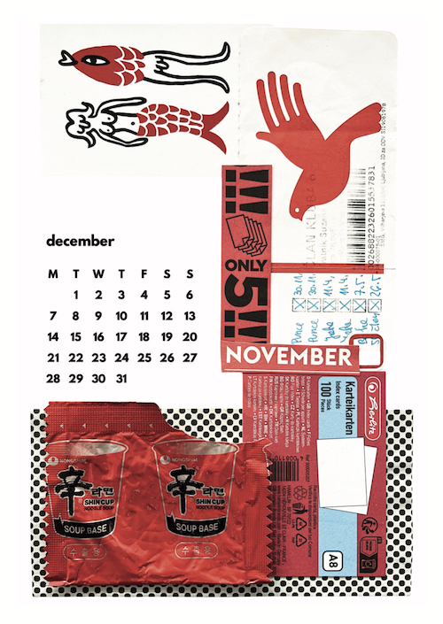
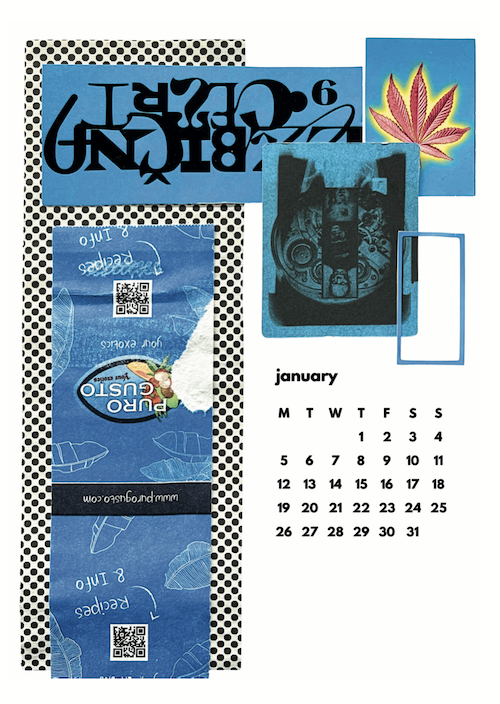
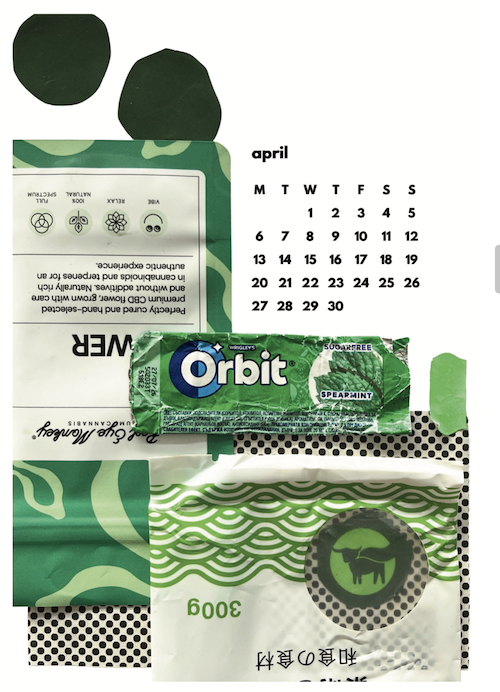
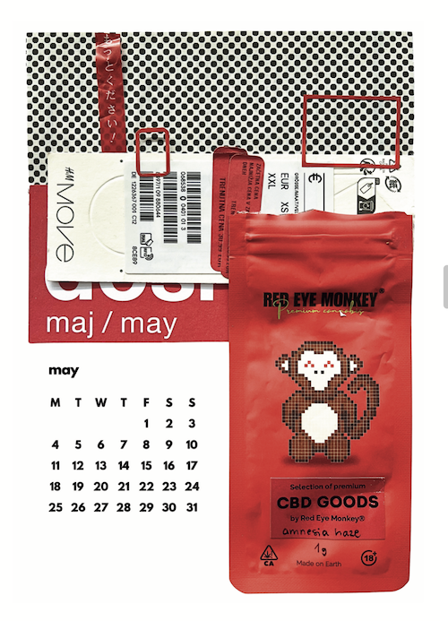

A5 format, 14 pages, digital print of physical collage (run of 20)
| Name | Tags | Created | Size |
|---|---|---|---|
| Parent Directory | collage, anti-consumerism | 2025-12-08 11:22 | 10MB |
In 2025, after a year of developing the practice of "junk journalling" — making collages from the leftover pieces of trash from my travels and everyday life — I created an ultra-low-run of calendars for the year 2026 using the technique and distributed it amongst my friends.
Each month features a colour theme. The calendar includes an invitation for the user to reconsider the functionality of their own "trash" and participate in the artwork by pasting another piece to the collage. If they wish, they can also upload a photo of their creation to a shared Dropbox folder to share with others in the group.
The project subtly highlights the issues of overconsumption and the importance of repurposing waste materials, while also fostering an appreciation for the graphic design found in scrap packaging, tickets, flyers, advertisements, and other items we usually thoughtlessly discard.




